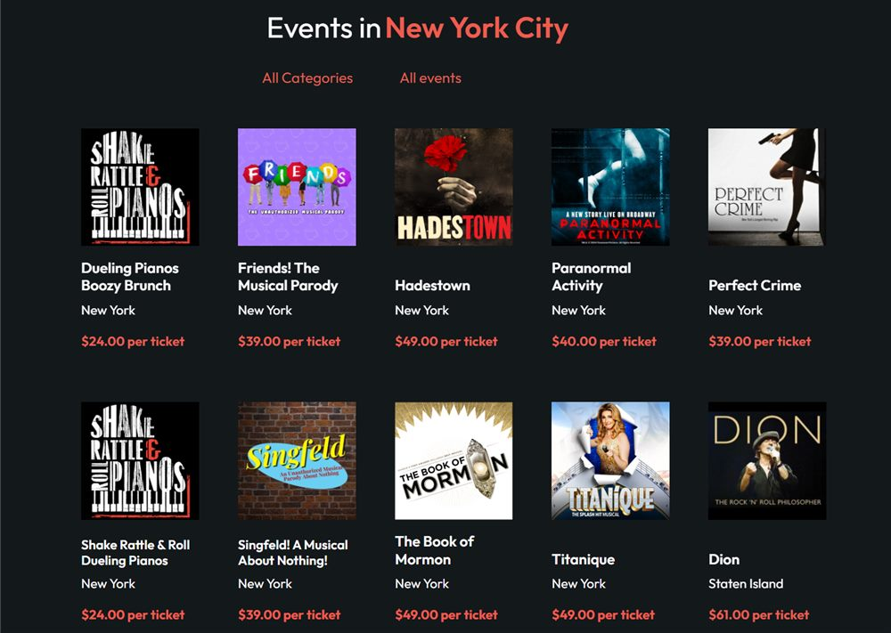
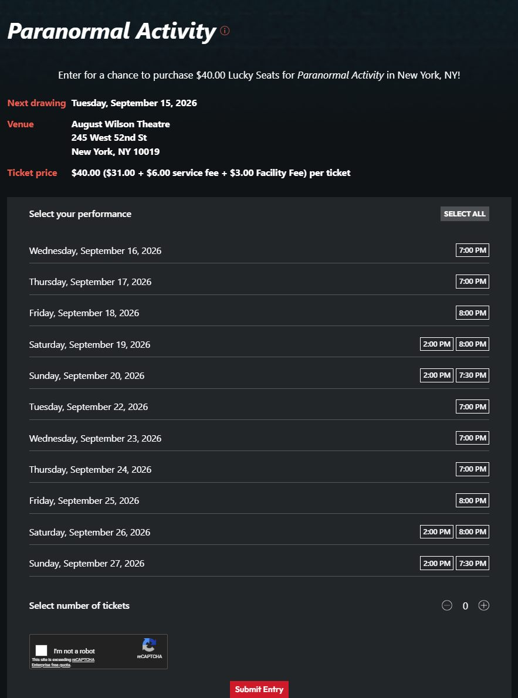
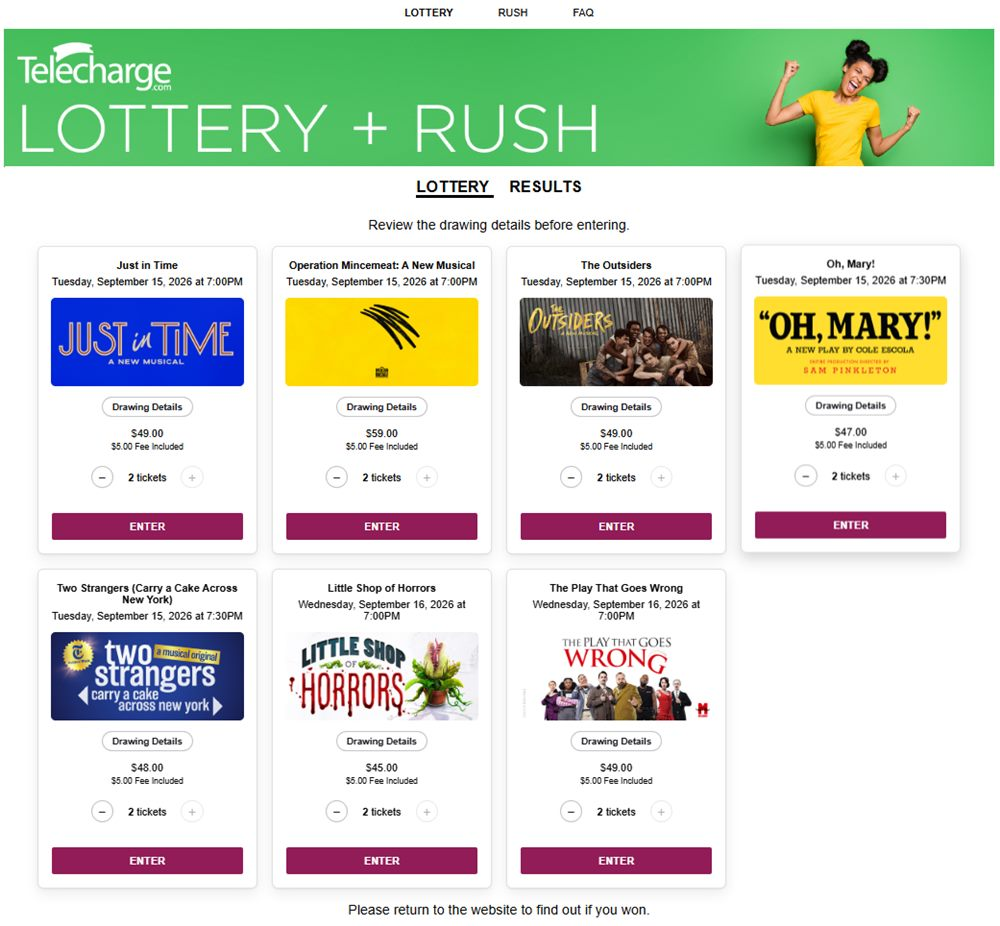
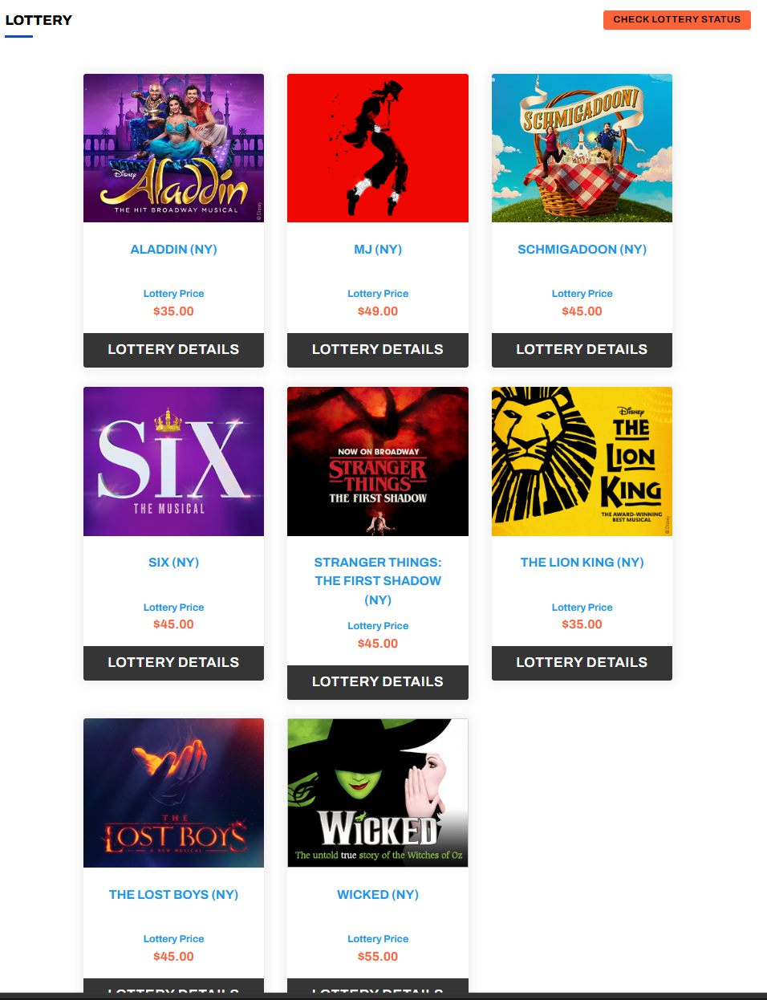
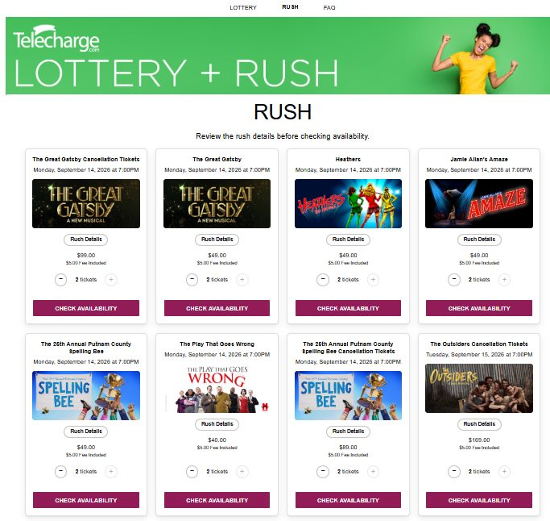
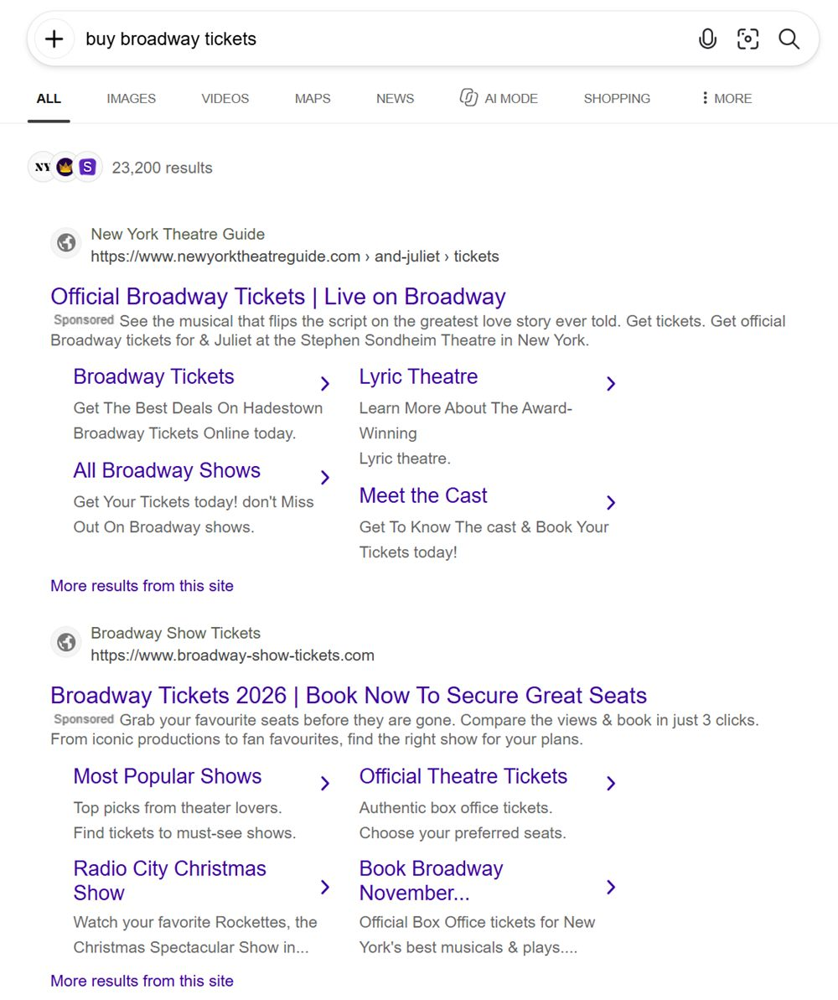
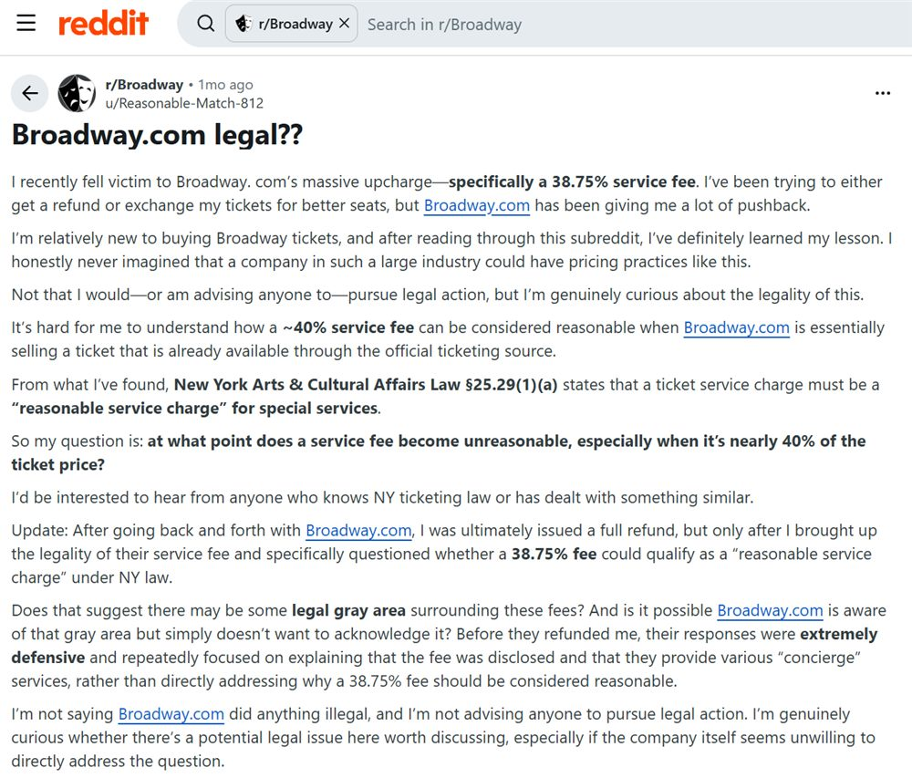

About me
Hi, I'm Maur! I see a lot of Broadway and I almost never pay full price. This site is everything I've figured out about lotteries, rush, and discount programs, all in one place.
It's also my fun coding project. I'm building it (with some AI help) to get better at coding.
Maur's Guide to Broadway on a Budget
Most of these are free to enter. Lotteries and rush are usually capped at 2 tickets.
- Price cheat sheet
- Lotteries
- Digital rush
- Apps
- In person
- Free memberships
- Paid memberships
- Tips & warnings
Price cheat sheet
| Option | Typical price | Who / how many | Cost to join |
|---|---|---|---|
| Digital lottery (Lucky Seat, Telecharge, Broadway Direct) | $35 – $59 | Anyone, max 2 | Free |
| Telecharge digital rush | $40 – $49 | Anyone, max 2 | Free |
| HipTix (Roundabout) | $30 | Ages 18–40 | Free |
| MTC35 (Manhattan Theatre Club) | $35 | Ages 35 and under | Free |
| LincTix (Lincoln Center Theater) | $35 – $40.50 | Ages 18–35 | Free |
| TDF membership | $53.50 – $62.50 | Must qualify, up to 9 | $42/yr |
| TKTS booth | varies | Anyone, good for groups of 3+ | Free |
Prices are from my screenshots in fall 2026 and change by show. Lottery/rush prices usually include a fee.
Lotteries free, online
Lucky Seat
- You can enter for a week or more at a time.
- Also has cities other than NYC.
See the events page

See an entry form

Telecharge
- Enter before 10:00 AM and you're in both drawings.
- Broadway: enter the day before the show. Off-Broadway: two days before.
- If you win one show, you're removed from competing shows at the same date/time. So if you really want a specific show, don't enter the others. (Winning Operation Mincemeat would knock you out of the Oh, Mary! pool for that slot.)
See the lottery page

Broadway Direct
- Each show is its own page and you re-type your info every time.
- Opens at different times in the morning the day before, closes at 3:00 PM.
- Has a stand-by: if you entered and winners don't buy, you might still get tickets after 3:00 PM.
See the lottery page

Show-specific apps
- Hamilton has its own app. You can enter for two weeks at a time.
- TodayTix runs some lotteries too, like the Friday Forty for Harry Potter and the Cursed Child, plus a few daily ones.
Same-day digital rush free, online
Telecharge Rush
- Max 2 tickets. Usually opens at 11:00 AM and refreshes every 2 minutes. Nothing at 11:00? Try 11:02, 11:04, etc.
- Closes 30 minutes before showtime but can sell out way sooner. Popular shows usually go at 11:00.
- Seats could be partial view or not together.
- Sign up with LinkedIn, Facebook, X, or email.
- You can only rush every 3 days. Buy Sunday, next rush is Wednesday.
See the rush page

Apps
TodayTix
- Filter by "Lottery & Rush".
- You can set reminders to enter.
- Rush usually goes live at 9:00 AM. Retry every 5 minutes (9:05, 9:10...).
- Lots of Off-Broadway shows too.
Theatr resale
- Started as an Instagram account helping people resell last-minute tickets, now it's an app.
- No upcharging allowed. Everything is face value or less.
- Tickets go fast (about 40% are gone in 10 minutes), so check often if your dates are flexible.
In person
In-person rush
- Popular shows can have a line before the box office opens, and there's a set number of rush seats.
- You can also pop into the box office close to showtime for a discount (technically that's usually rush too).
TKTS booth
- Same-day tickets. Best for groups of 3+. I'd personally try the other options first, but it's not a bad deal.
- Check what's available: TKTS Live.
- I've heard the Lincoln Center booth has a way shorter line than Times Square.
- Very rare for popular shows to be there.
Free memberships
LincTix ages 18–35
- $35–$40.50 tickets to every Lincoln Center Theater production, including their Broadway shows.
- $40.50 online (includes Telecharge + facility fee), $37 at the box office.
- Book on the LincTix site. Tickets go on sale at a set time.
HipTix ages 18–40
- Roundabout's program. $30 tickets to all Roundabout shows.
- Uses the Criterion app.
MTC35 ages 35 and under
- $35 tickets to every Manhattan Theatre Club show, plus member post-show parties.
- I think you use a code on Telecharge and pick up at the box office with ID.
Audience Rewards anyone
- Basically frequent flyer miles for theatre. Covers all 41 Broadway theaters plus some off-Broadway, cabarets, and the Met Opera.
- Enter your number at checkout to earn ShowPoints. Use them on tickets, meet and greets, Q&As, or restaurant gift cards.
- Sign up before your next purchase so you don't miss points.
Paid memberships
TDF $42/year
- Broadway tickets $53.50–$62.50. Off-Broadway from $11.
- Buy up to 4 weeks ahead, for up to 9 people.
Tips & warnings
Never buy from unofficial websites!
You're usually paying a markup, and some are straight-up scams that never send tickets. They look polished, but they make their money off your extra fees. Watch out for "Sponsored" results when you search.
See what the ads look like

Broadway.com = real tickets, huge markup
Avoid. People on Reddit have reported service fees close to 40%.
See the Reddit post

Be careful with social media resale
Facebook groups, Craigslist, and similar sites are where most scams and over-face-value listings happen. Only buy resale through a platform with buyer protection, like Theatr.
Previews are usually cheaper
There might be tech issues or changes. I saw a show in previews and again after opening, and they'd cut a scene. Kind of cool to see them figuring out what worked.
Double-check discount codes
Codes from mailers or Reddit can be expired or limited. Test it on the official site, and don't enter payment info on a site you didn't expect to land on.
Recommended Sites & Apps
Where I check what's playing, what's discounted, and whether a seat is any good.
B'way Rush
- Great summary of what's playing and every discount option for each show.
- Also lists upcoming shows and closing dates (usually only about a month out).
Playbill
- All current Broadway shows with details and links to official ticket sellers.

A View From My Seat
- People post a photo of the stage from their seat with section, row, and seat number, plus a 1–5 rating and notes (partial view, legroom, aisle).
- Best for long-running shows like Hamilton, The Lion King, Wicked.
- Harder for new shows. A seat that was fine for Dear Evan Hansen at the Music Box could be partial view for Inter Alia (opened 11/11/2026).
See some of my seat photos

Did They Like It?
- Critic reviews summed up as thumbs up / on the fence / thumbs down after a show opens.
- Their staff assign the ratings, so a critic may not have literally said "thumbs down."
- Links to reviews and the official ticket site.
See the review tally

Show-Score
- Kind of like Rotten Tomatoes for theatre. A little inflated in my opinion.
See the scores

Apps I use
- TodayTix: lottery, rush, reminders
- Lucky Seat: easiest lottery
- Theatr: face-value resale
- Hamilton: its own lottery app
- Criterion: for HipTix
Code & Scripts
Tools I'm building to keep track of Broadway. Work in progress!
Broadway Show Tracker updating
Scripts for tracking shows on Broadway. Getting a refresh soon.
This website
Plain HTML and CSS, hosted free on GitHub Pages. Built as a learn-to-code project with AI help.